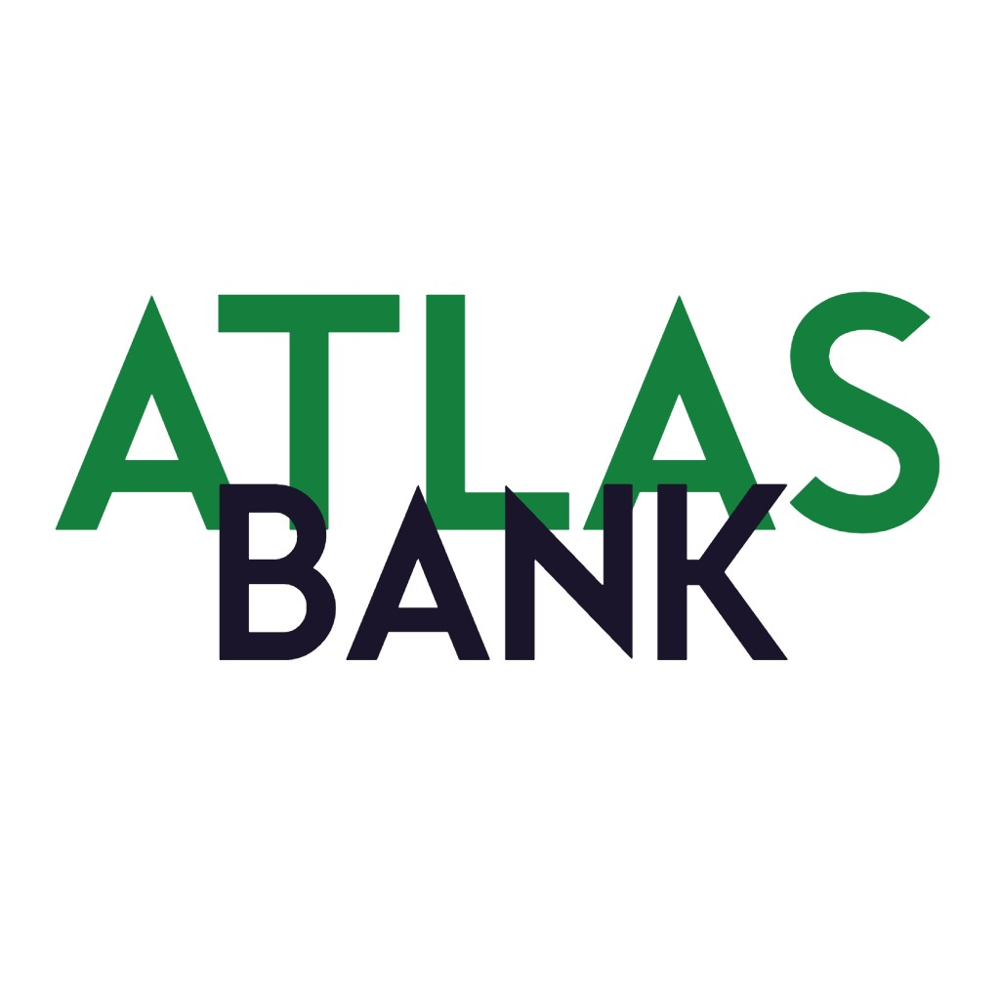

Emily Monterrosa
Full-Stack Dev. En Proceso
Interfaz + Lógica + Estructura = Nada extrañoQuién Soy
Soy curiosa, pero no caótica.
Me gusta explorar ideas nuevas, probar enfoques distintos y cuestionar lo establecido. Pero también me interesa entender las reglas antes de decidir romperlas. Estoy en un punto donde cada proyecto es una oportunidad para experimentar con intención. No busco soluciones llamativas. Busco soluciones que tengan sentido.
A veces eso implica simplificar. A veces implica arriesgar.
Estoy aprendiendo a distinguir la diferencia.
Cómo Pienso
No aprendo a usar herramientas. Aprendo a tomar decisiones.
Al enfrentar un problema, no asumo que está bien planteado. Separo el reto técnico real del problema de enfoque. Ubico la restricción principal y construyo a partir de ahí. Cero optimización prematura. Construyo la solución mínima viable para el caso actual. Si el sistema debe escalar, lo hará por necesidad, no por anticipación. Toda decisión tiene un costo, y evalúo muy bien esos intercambios. Si algo no aporta, lo quito. Si puede ser más claro, lo simplifico.
No busco complejidad. Busco coherencia.
Arquitectura y Lógica
Interfaz e Interacción
Modelado de Datos
Build y Validación
THE-END: Sistema de Gestión de Cines
Aplicación full-stack para gestionar cartelera, funciones, asientos y venta de tiquetes en un cine. El reto principal fue la grilla de asientos interactiva y su cálculo de precios en tiempo real. Tres roles diferenciados y autenticación con login social vía Supabase Auth + JWT.

ATLASBank: Simulador Bancario
Sistema bancario full-stack con gestión de cuentas, transferencias, detección de fraude y un motor de simulación financiera. El mayor reto fue el frontend: comunicación con el backend y representar datos financieros complejos de forma clara e intuitiva.